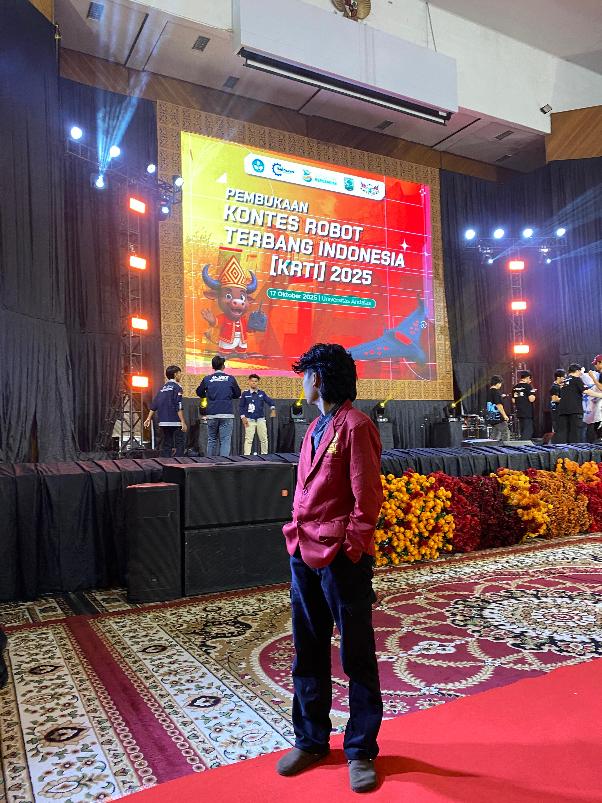

Halo! Saya Alika Dwi Nugroho, mahasiswa semester 4 program studi Teknik Elektro di Universitas Muhammadiyah Yogyakarta yang memiliki antusiasme tinggi terhadap inovasi teknologi. Fokus utama saya berada di persimpangan antara Robotika dan Kelistrikan, di mana saya aktif terlibat dalam berbagai kegiatan Research dan pengembangan sistem berbasis mikrokontroler. Untuk mewujudkan gagasan menjadi perangkat nyata, saya memadukan logika Pemrograman dengan perancangan perangkat keras melalui 3D design dan desain sirkuit. Berbekal Growth Mindset dan kemampuan Problem solving, saya terbiasa menganalisis dan memecahkan tantangan teknis dalam setiap Project yang saya kerjakan. Saya percaya bahwa batas kemampuan hanyalah ilusi, oleh karena itu saya selalu berusaha untuk terus mengeksplorasi hal baru dan mengasah diri agar menjadi pribadi unggul yang memiliki nilai jual tinggi di dunia industri profesional.